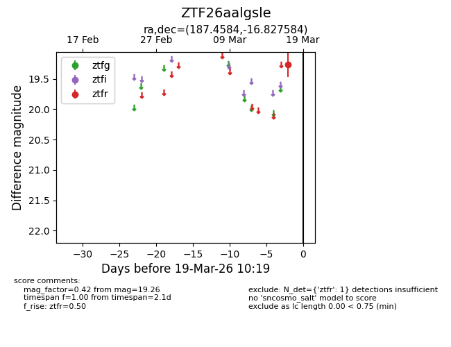
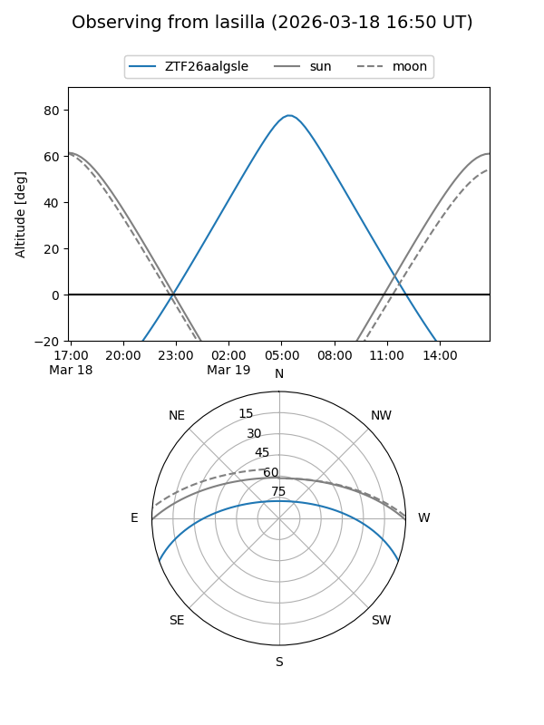
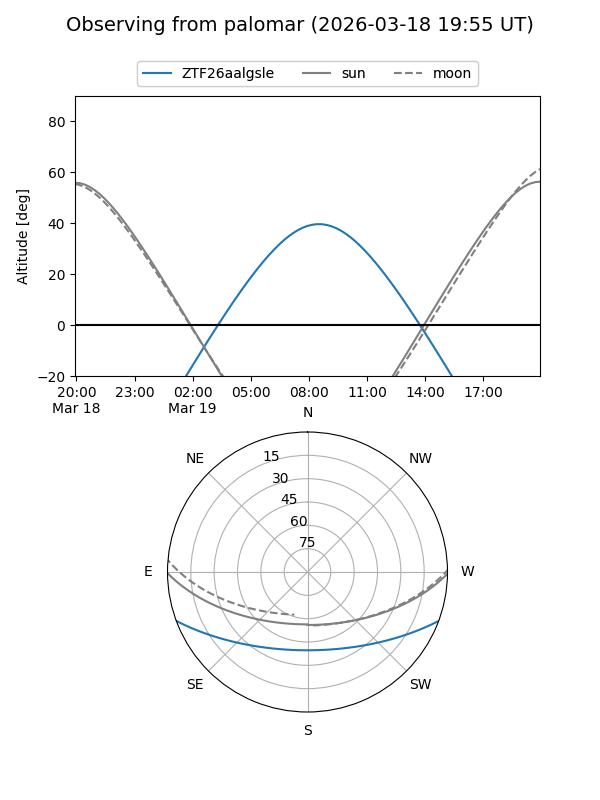

ZTF26aalgsle
Target ZTF26aalgsle at 2026-03-19 10:21
Aliases and brokers:
FINK: link
Lasair: link
ALeRCE: link
alt names
ZTF26aalgsle (ztf,fink_ztf)
Coordinates:
equatorial (ra, dec) = 187.4584,-16.82758
equatorial (HMS+DMS) = 12:29:50.02,-16:49:39.30
galactic (l, b) = (295.5157,+45.73284)
Flags:
Photometry:
last ztfr=19.26
1 ztfr detections
Lightcurve

Visibility


Additional plots